4 Análisis de Correspondencias Múltiples
A continuación se muestra el Análisis de Correspondencias Múltiples (ACM) de los datos SaberPro 2022-2.
Se realiza un ACM para cada una de los distintos tipos de variables que cuenta la base de datos (Variables relacionadas con la información personal, Variables relacionadas con la información académica y Variables relacionadas con la información socioeconómica). En cada uno de los ACM se muestra la variable cuantitativa correspondiente al puntaje global como variable suplementaria.
4.1 Variables relacionadas con la información personal
4.1.1 Dimensiones para el ACM
Como en el ACM existen ejes que se consideran “parásitos”, se utiliza el Criterio de Benzécri para determinar con cuantos ejes realizar el ACM. Luego de aplicar dicho criterio, se obtiene la siguiente inercia para los ejes:

La inercia en cada eje luego de aplicar el criterio de Benzécri es
| Ejes | Inercia |
|---|---|
| Eje 1 | 35.8036 |
| Eje 2 | 26.6352 |
| Eje 3 | 24.2573 |
| Eje 4 | 3.4761 |
| Eje 5 | 1.9278 |
| Eje 6 | 1.3786 |
| Eje 7 | 1.1149 |
| Eje 8 | 1.0135 |
| Eje 9 | 0.8647 |
| Eje 10 | 0.8353 |
| Eje 11 | 0.6289 |
| Eje 12 | 0.4796 |
| Eje 13 | 0.4021 |
| Eje 14 | 0.3175 |
| Eje 15 | 0.2567 |
| Eje 16 | 0.1529 |
| Eje 17 | 0.1313 |
| Eje 18 | 0.1005 |
| Eje 19 | 0.0916 |
| Eje 20 | 0.0693 |
| Eje 21 | 0.0310 |
| Eje 22 | 0.0171 |
| Eje 23 | 0.0105 |
| Eje 24 | 0.0033 |
| Eje 25 | 0.0007 |
| Eje 26 | 0.0001 |
| Eje 27 | 0.0000 |
Entonces, se realiza el análisis con 3 ejes para el ACM.
4.1.2 Contribución de las variables al eje 1
Podemos ver que las que más contribuyen al primer eje son las categorías “desconocido” de las distintas variables, veremos a qué nos lleva esto más adelante.
4.1.3 Contribución de las variables al eje 2

La mayor contribución en este eje también es dado por categorías “desconocido”, por lo que la variabilidad de estas categorías fue capturada en el primer y segundo eje, de ahí, ya empiezan a aparecer categorías distintas.
4.1.4 Contribución de las variables al eje 3

La mayor contribución en este eje es dado por categorías referentes a la ocupación y la educación de los padres.
4.1.5 Representación de las variables


Si bien se muestra que variables relacionadas con la ocupación de la madre y padre están muy correlacionadas con el eje 1, y variables relacionadas con la educación de madre y padre con el eje 2; esta representación no es muy fiable ya que la mayoría de las variables tienen la categoría ‘’Desconocido’’ con muy pocos individuos, lo que hace que estas categorías pesen demasiado y afecten la razón de correlaciones de cada variable. Además, las variables de educación y ocupación de madre y padre tienen bastantes más categorías que las otras variables que se usaron para hacer este ACM.
4.1.6 Visualización del puntaje global

Nota
Para los siguientes ACMs, se graficaron los planos factoriales separando por variables y luego el plano factorial con todas las variables. En cada eje se acotó a un intervalo más pequeño para que se pueda apreciar de mejor manera la representación de las distintas variables, debido a que las categorías “desconocido” que hacen referencia a los valores faltantes en cada variable son las que más pesan, llevando a que tengan coordenadas que en proporción a las otras categorías son muy grandes, sin embargo, en el plano factorial con todas las variables se graficó tanto acotando como sin acotar, principalmente para apreciar esta diferencia. Además, para facilitar la visualización se recodificaron las variables con el fin de que las etiquetas de cada categoría sean más legibles. Se obviará la categoría desconocido en la mayoría de las variables ya que siempre estaba relacionada al primer eje y no parecía decir nada relevante.
Las coordenadas son:
| Dim.1 | Dim.2 | Dim.3 | |
|---|---|---|---|
| 1_Desconocido | 18.2806 | 0.0021 | -2.3614 |
| 1_F | -0.0053 | 0.0064 | -0.0509 |
| 1_M | 0.0058 | -0.0090 | 0.0721 |
Los valores test son:
| Dim.1 | Dim.2 | Dim.3 | |
|---|---|---|---|
| 1_Desconocido | 40.877 | 0.0048 | -5.28 |
| 1_F | -2.259 | 2.7056 | -21.58 |
| 1_M | 1.739 | -2.7057 | 21.64 |
Las coordenadas son:
| Dim.1 | Dim.2 | Dim.3 | |
|---|---|---|---|
| 2_Desconocido | 10.4991 | -0.4940 | -1.7013 |
| 2_No | -0.0641 | -0.0085 | 0.0539 |
| 2_Si | -0.0667 | 0.1308 | -0.4733 |
Los valores test son:
| Dim.1 | Dim.2 | Dim.3 | |
|---|---|---|---|
| 2_Desconocido | 293.175 | -13.795 | -47.51 |
| 2_No | -73.559 | -9.719 | 61.91 |
| 2_Si | -7.113 | 13.950 | -50.48 |


Las coordenadas son:
| Dim.1 | Dim.2 | Dim.3 | |
|---|---|---|---|
| 3_BOGOTÁ | 0.0759 | -0.0613 | 0.3226 |
| 3_Desconocido | 18.7810 | 6.5451 | -0.9622 |
| 3_OTRO | -0.0280 | 0.0203 | -0.1104 |
Los valores test son:
| Dim.1 | Dim.2 | Dim.3 | |
|---|---|---|---|
| 3_BOGOTÁ | 15.84 | -12.80 | 67.383 |
| 3_Desconocido | 59.39 | 20.70 | -3.043 |
| 3_OTRO | -17.05 | 12.38 | -67.314 |

Las coordenadas son:
| Dim.1 | Dim.2 | Dim.3 | |
|---|---|---|---|
| 4_C | -0.0674 | 0.3387 | -0.8198 |
| 4_Desconocido | 10.5877 | -0.4271 | -1.6381 |
| 4_S | -0.0365 | -0.0572 | 0.1583 |
| 4_SyoV | -0.0524 | 0.4468 | -0.7153 |
| 4_UL | -0.1521 | 0.2929 | -0.7956 |
Los valores test son:
| Dim.1 | Dim.2 | Dim.3 | |
|---|---|---|---|
| 4_C | -6.276 | 31.54 | -76.35 |
| 4_Desconocido | 255.567 | -10.31 | -39.54 |
| 4_S | -29.734 | -46.60 | 128.95 |
| 4_SyoV | -1.660 | 14.16 | -22.67 |
| 4_UL | -16.521 | 31.82 | -86.41 |
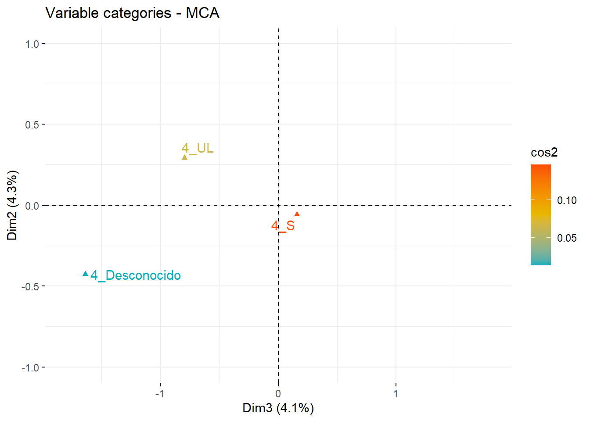
Las coordenadas son:
| Dim.1 | Dim.2 | Dim.3 | |
|---|---|---|---|
| 5_BC | -0.0741 | -0.1406 | -0.1901 |
| 5_BI | -0.0909 | -0.0348 | -0.5415 |
| 5_Desconocido | 0.4936 | 4.6507 | 1.2752 |
| 5_EPC | 0.1592 | -0.4888 | 1.0039 |
| 5_EPI | 0.0116 | -0.2746 | 0.3306 |
| 5_NAp | -0.0801 | -0.1560 | -0.1799 |
| 5_Ninguno | -0.1289 | 0.1677 | -1.1402 |
| 5_NS | -0.0117 | -0.2081 | -0.0501 |
| 5_PC | -0.0915 | 0.0362 | -0.7624 |
| 5_PI | -0.1423 | 0.0676 | -0.9389 |
| 5_Post | 0.2870 | -0.6493 | 1.5185 |
| 5_TTC | -0.0266 | -0.2826 | 0.2984 |
| 5_TTI | 0.0006 | -0.1786 | 0.0374 |
Los valores test son:
| Dim.1 | Dim.2 | Dim.3 | |
|---|---|---|---|
| 5_BC | -12.8652 | -24.422 | -33.024 |
| 5_BI | -10.0837 | -3.864 | -60.046 |
| 5_Desconocido | 34.7951 | 327.855 | 89.897 |
| 5_EPC | 21.8899 | -67.194 | 137.996 |
| 5_EPI | 0.8939 | -21.238 | 25.565 |
| 5_NAp | -3.0241 | -5.891 | -6.794 |
| 5_Ninguno | -6.9198 | 9.002 | -61.219 |
| 5_NS | -0.6951 | -12.397 | -2.985 |
| 5_PC | -9.3136 | 3.689 | -77.587 |
| 5_PI | -23.2431 | 11.042 | -153.363 |
| 5_Post | 28.5885 | -64.690 | 151.284 |
| 5_TTC | -3.1345 | -33.308 | 35.169 |
| 5_TTI | 0.0382 | -11.070 | 2.317 |
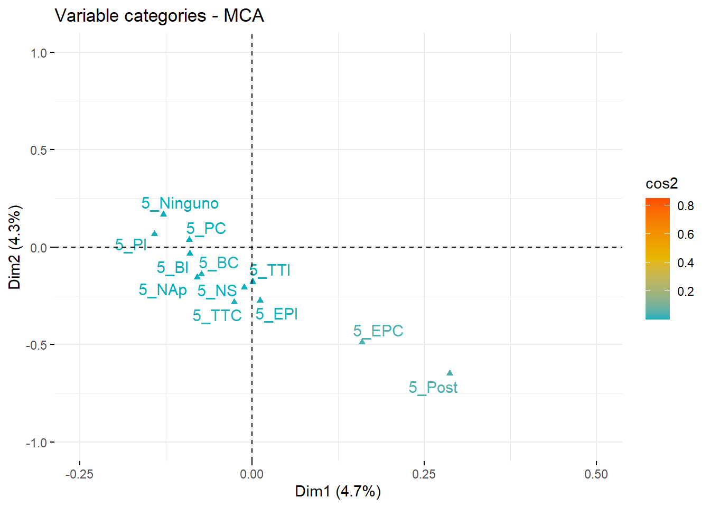
Las coordenadas son:
| Dim.1 | Dim.2 | Dim.3 | |
|---|---|---|---|
| 6_BC | -0.0802 | -0.0989 | -0.3572 |
| 6_BI | -0.1238 | -0.0088 | -0.6657 |
| 6_Desconocido | 0.4891 | 4.6500 | 1.2755 |
| 6_EPC | 0.1414 | -0.4944 | 1.0315 |
| 6_EPI | 0.0690 | -0.3345 | 0.4846 |
| 6_NAp | 0.2020 | -0.1999 | -0.1674 |
| 6_Ninguno | -0.1047 | 0.1855 | -1.2763 |
| 6_NS | -0.0476 | -0.1805 | -0.0131 |
| 6_PC | -0.1307 | 0.0586 | -0.8893 |
| 6_PI | -0.1665 | 0.0972 | -1.0486 |
| 6_Post | 0.2900 | -0.6344 | 1.4447 |
| 6_TTC | -0.0215 | -0.2664 | 0.2309 |
| 6_TTI | -0.0073 | -0.1447 | -0.0639 |
Los valores test son:
| Dim.1 | Dim.2 | Dim.3 | |
|---|---|---|---|
| 6_BC | -14.5557 | -17.963 | -64.8614 |
| 6_BI | -14.6507 | -1.047 | -78.8052 |
| 6_Desconocido | 34.8625 | 331.454 | 90.9172 |
| 6_EPC | 20.5780 | -71.934 | 150.0900 |
| 6_EPI | 4.3287 | -20.994 | 30.4097 |
| 6_NAp | 3.1199 | -3.087 | -2.5856 |
| 6_Ninguno | -4.5260 | 8.018 | -55.1600 |
| 6_NS | -1.1054 | -4.187 | -0.3031 |
| 6_PC | -13.0480 | 5.848 | -88.7721 |
| 6_PI | -22.8760 | 13.348 | -144.0333 |
| 6_Post | 30.6914 | -67.134 | 152.8716 |
| 6_TTC | -3.1485 | -38.967 | 33.7858 |
| 6_TTI | -0.5136 | -10.186 | -4.4985 |
Las coordenadas son:
| Dim.1 | Dim.2 | Dim.3 | |
|---|---|---|---|
| 7_Desconocido | 7.0637 | -0.5053 | -0.8919 |
| 7_EDGG | 0.0780 | -0.4655 | 1.5239 |
| 7_Emp | -0.0162 | -0.3356 | 0.9206 |
| 7_ENAA | -0.0705 | -0.0808 | 0.5063 |
| 7_END | 0.0628 | -0.3864 | 1.3942 |
| 7_ENTP | 0.0212 | -0.3341 | 1.1586 |
| 7_EOO | -0.1854 | 0.1195 | -0.5063 |
| 7_H | -0.1868 | 0.1665 | -0.6401 |
| 7_OAO | -0.1588 | 0.1007 | -0.3423 |
| 7_PE | -0.0920 | 0.0056 | 0.2486 |
| 7_Pen | -0.1077 | 0.0711 | 0.0141 |
| 7_PI | 0.0474 | -0.3461 | 1.3196 |
| 7_TCP | -0.1700 | 0.1391 | -0.4263 |
Los valores test son:
| Dim.1 | Dim.2 | Dim.3 | |
|---|---|---|---|
| 7_Desconocido | 323.226 | -23.120 | -40.810 |
| 7_EDGG | 4.103 | -24.488 | 80.173 |
| 7_Emp | -1.025 | -21.276 | 58.367 |
| 7_ENAA | -3.581 | -4.107 | 25.719 |
| 7_END | 2.630 | -16.174 | 58.352 |
| 7_ENTP | 2.574 | -40.665 | 141.003 |
| 7_EOO | -25.527 | 16.462 | -69.718 |
| 7_H | -10.480 | 9.342 | -35.918 |
| 7_OAO | -23.719 | 15.038 | -51.120 |
| 7_PE | -6.703 | 0.407 | 18.104 |
| 7_Pen | -12.857 | 8.489 | 1.679 |
| 7_PI | 3.569 | -26.059 | 99.374 |
| 7_TCP | -40.481 | 33.124 | -101.540 |

Las coordenadas son:
| Dim.1 | Dim.2 | Dim.3 | |
|---|---|---|---|
| 8_Desconocido | 7.0637 | -0.5053 | -0.8919 |
| 8_EDGG | 0.0809 | -0.5279 | 1.5744 |
| 8_Emp | -0.0069 | -0.3346 | 1.0370 |
| 8_ENAA | -0.0714 | -0.1159 | 0.5064 |
| 8_END | 0.0659 | -0.4299 | 1.3921 |
| 8_ENTP | 0.0318 | -0.3544 | 1.2176 |
| 8_EOO | -0.1783 | 0.1533 | -0.4709 |
| 8_H | -0.1772 | 0.1371 | -0.4891 |
| 8_OAO | -0.1451 | 0.0579 | -0.2424 |
| 8_PE | -0.0979 | -0.0428 | 0.2454 |
| 8_Pen | -0.0772 | 0.0455 | 0.2024 |
| 8_PI | 0.0474 | -0.3474 | 1.3430 |
| 8_TCP | -0.1614 | 0.1562 | -0.3476 |
Los valores test son:
| Dim.1 | Dim.2 | Dim.3 | |
|---|---|---|---|
| 8_Desconocido | 323.226 | -23.120 | -40.81 |
| 8_EDGG | 3.345 | -21.816 | 65.06 |
| 8_Emp | -0.294 | -14.328 | 44.41 |
| 8_ENAA | -6.269 | -10.169 | 44.43 |
| 8_END | 3.151 | -20.557 | 66.56 |
| 8_ENTP | 3.973 | -44.304 | 152.21 |
| 8_EOO | -14.242 | 12.248 | -37.62 |
| 8_H | -51.595 | 39.937 | -142.46 |
| 8_OAO | -15.081 | 6.024 | -25.20 |
| 8_PE | -6.789 | -2.966 | 17.01 |
| 8_Pen | -6.411 | 3.775 | 16.80 |
| 8_PI | 3.391 | -24.847 | 96.06 |
| 8_TCP | -21.307 | 20.623 | -45.88 |

Las coordenadas son:
| Dim.1 | Dim.2 | Dim.3 | |
|---|---|---|---|
| 9_0 | 0.0620 | -0.3927 | 0.5668 |
| 9_Menos de 10 horas | -0.0374 | -0.2176 | -0.0304 |
| 9_Entre 11 y 20 horas | -0.0204 | -0.2028 | -0.0659 |
| 9_Entre 21 y 30 horas | -0.0455 | -0.2034 | -0.0542 |
| 9_Más de 30 horas | -0.0428 | -0.1213 | -0.3441 |
| 9_Desconocido | 0.3645 | 3.6275 | 0.9830 |
Los valores test son:
| Dim.1 | Dim.2 | Dim.3 | |
|---|---|---|---|
| 9_0 | 9.602 | -60.79 | 87.748 |
| 9_Menos de 10 horas | -5.489 | -31.95 | -4.460 |
| 9_Entre 11 y 20 horas | -3.268 | -32.56 | -10.574 |
| 9_Entre 21 y 30 horas | -6.114 | -27.32 | -7.276 |
| 9_Más de 30 horas | -11.214 | -31.81 | -90.190 |
| 9_Desconocido | 31.055 | 309.05 | 83.750 |

Teniendo en cuenta las coordenadas del puntaje global, encontrándose en el cuarto cuadrante de los planos plano, las conclusiones a las que se llegan son muy parecidas a las que se obtuvieron en el ACP. Los estudiantes con características como hombre, sin etnia, que viven en Bogotá, con estado civil soltero, con padres y madres con niveles de educación superior, mejores puestos laborales y menos horas de trabajo, tienen en promedio mejores puntajes que el resto. El primer eje no parece aportar información relevante, el segundo parece reafirmar las conclusiones halladas en el ACP y el tercer eje también parece reafirmar estas conclusiones.

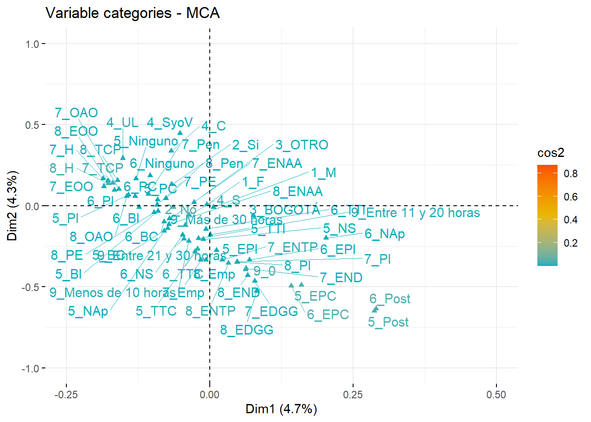
Vemos que sin acotar en el primer y segundo eje, la mayoría de las categorías están muy cerca al centro, mientras que las categorías desconocido se encuentran por lo general muy alejadas de el centro, lo cual era esperable pues estos individuos son los que tenían valores faltantes, que por lo general eran una pequeña cantidad, por lo que su variabilidad es muy grande.
Acotando en los ejes, podemos ver que las características relacionadas a un mejor nivel socioeconómico y a menos responsabilidades, como padres y madres en mejores cargos, padres y madres con mejores niveles educativos, estar soltero, no trabajar, se encuentran concentradas en el cuarto cuadrante del plano, en donde también se encuentran las coordenadas del puntaje global.

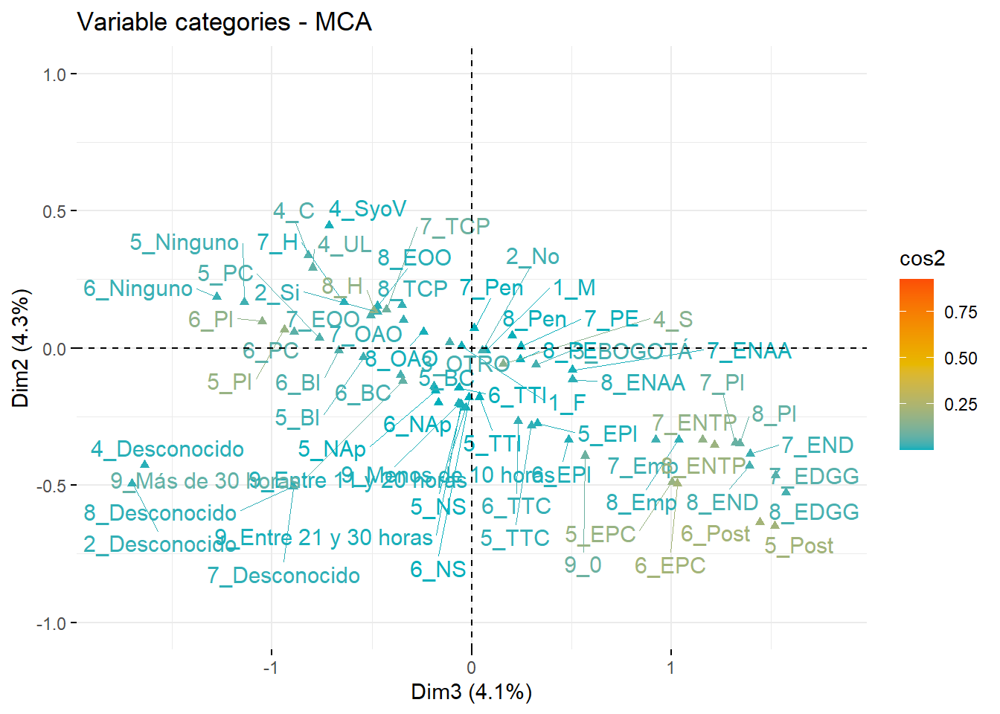
Vemos que sin acotar el tercer eje, la mayoría de las categorías están muy cerca al centro, y las categorías desconocido aunque están lejos, no es de la misma manera que con el primer o segundo eje.
Acotando en los ejes, podemos ver prácticamente lo mismo, aunque en este plano factorial algunas categorías “desconocido” se pueden apreciar más cerca a las demás variables, concretamente concentrándose en el tercer cuadrante. De ahí, no se aprecia a simple vista una agrupación nueva.
En resumen, vemos que los datos parecen llevarnos a la misma conclusión que en el caso del ACP.
4.2 Variables relacionadas con la información académica
4.2.1 Dimensiones para el ACM

Se utiliza el Criterio de Benzecri para determinar con cuantos ejes realizar el ACM. Luego de aplicar dicho criterio, se obtiene la siguiente inercia para los ejes:

La inercia en cada eje luego de aplicar el criterio de Benzécri es
| Ejes | Inercia |
|---|---|
| Eje 1 | 79.6678 |
| Eje 2 | 18.0798 |
| Eje 3 | 1.2208 |
| Eje 4 | 0.7099 |
| Eje 5 | 0.2576 |
| Eje 6 | 0.0640 |
| Eje 7 | 0.0001 |
Entonces, se realiza el análisis con 2 ejes para el ACM.
4.2.2 Contribución de las variables al eje 1

De nuevo las categorías que más contribuyen al primer eje son las de desconocido.
4.2.3 Contribución de las variables al eje 2
Las contribuciones al segundo eje se ven principalmente en la modalidad de estudio y el tipo de institución a la que el estudiante pertenece, y no se ve un aporte de las categorías desconocido.
4.2.4 Representación de las variables
Nuevamente, si bien se muestra que la variable Cómo capacitó el exámen está muy correlacionada con el eje 1, y las variables Método del programa y el Carácter acdémico de la institución se relacionan con el eje 2, esta representación no es muy fiable ya que la mayoría de las variables tienen la categoría ‘’Desconocido’’ con muy pocos individuos, lo que hace que estas categorías pesen demasiado y afecten la razón de correlaciones de cada variable.
4.2.5 Visualización del puntaje global

Las coordenadas son:
| Dim.1 | Dim.2 | |
|---|---|---|
| 1_CuentaPropia | -0.1250 | 0.1507 |
| 1_Curso | -0.1403 | -0.5706 |
| 1_Desconocido | 7.7141 | -0.3213 |
| 1_Ninguna | -0.1292 | -0.1918 |
Los valores test son:
| Dim.1 | Dim.2 | |
|---|---|---|
| 1_CuentaPropia | -63.71 | 76.82 |
| 1_Curso | -16.21 | -65.94 |
| 1_Desconocido | 353.77 | -14.74 |
| 1_Ninguna | -24.33 | -36.11 |
Las coordenadas son:
| Dim.1 | Dim.2 | |
|---|---|---|
| 2_06m | -0.0835 | 1.5888 |
| 2_07 | -0.1022 | 0.7493 |
| 2_08 | -0.1149 | 0.4743 |
| 2_09 | -0.1353 | -0.0427 |
| 2_10 | -0.1473 | -0.3795 |
| 2_11 | -0.1549 | -1.0377 |
| 2_12M | -0.1558 | -1.2542 |
| 2_Desconocido | 7.4868 | -0.3133 |
Los valores test son:
| Dim.1 | Dim.2 | |
|---|---|---|
| 2_06m | -3.923 | 74.68 |
| 2_07 | -10.450 | 76.60 |
| 2_08 | -23.530 | 97.08 |
| 2_09 | -33.558 | -10.58 |
| 2_10 | -29.142 | -75.08 |
| 2_11 | -11.744 | -78.69 |
| 2_12M | -11.091 | -89.28 |
| 2_Desconocido | 353.743 | -14.80 |
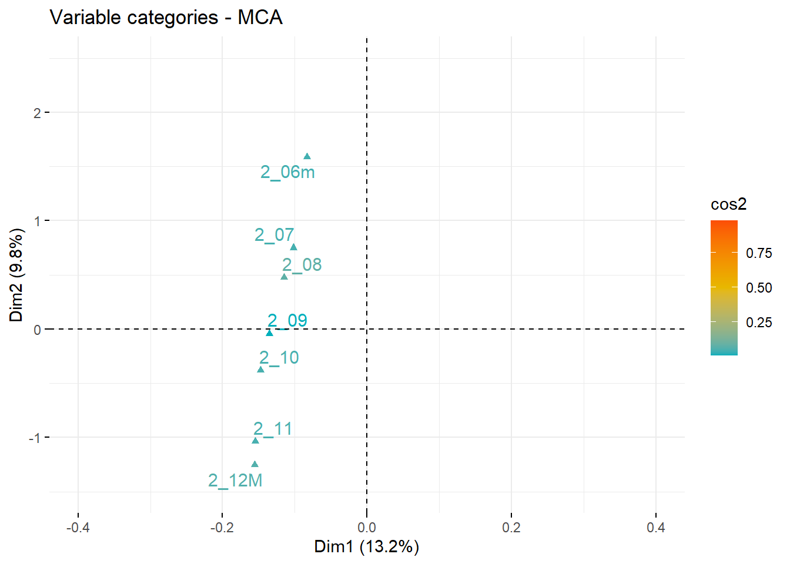
Se dejó como variable suplementaria ya que tiene 22 categorías
Las coordenadas son:
| Dim.1 | Dim.2 | |
|---|---|---|
| CienAgr | -0.0229 | -0.4091 |
| CienMilYNav | 0.1257 | 0.9401 |
| CienNatYExac | -0.0456 | -0.6003 |
| CienSoc | 0.0533 | -0.0118 |
| ComuPerYPub | 0.0498 | 0.1051 |
| ContYAfin | -0.0474 | 0.3170 |
| Derecho | -0.0401 | -0.3952 |
| EcAdContYAfinU | 1.3833 | -0.8957 |
| Economía | 0.1143 | -0.3092 |
| Educación | -0.0461 | 0.0551 |
| Enfermeria | -0.0839 | -0.1112 |
| GrupRefNal | 0.3034 | 0.0451 |
| GrupRefNalU | -0.0161 | 0.2141 |
| Hum | 0.0965 | -0.0585 |
| Inge | -0.0009 | -0.2135 |
| Med | -0.0692 | -1.1382 |
| Psic | 0.0006 | 0.2370 |
| RecYDep | -0.0950 | 0.1630 |
| salud | -0.0492 | -0.0046 |
| NA | NA | NA |
| NA.1 | NA | NA |
| NA.2 | NA | NA |
| Dim.1 | Dim.2 | |
|---|---|---|
| CienAgr | -1.1878 | -21.1893 |
| CienMilYNav | 3.5348 | 26.4378 |
| CienNatYExac | -2.2116 | -29.1230 |
| CienSoc | 3.5787 | -0.7886 |
| ComuPerYPub | 3.0136 | 6.3615 |
| ContYAfin | -4.4324 | 29.6191 |
| Derecho | -3.8217 | -37.6835 |
| EcAdContYAfinU | 14.6461 | -9.4838 |
| Economía | 4.8169 | -13.0282 |
| Educación | -4.4841 | 5.3605 |
| Enfermeria | -4.7794 | -6.3326 |
| GrupRefNal | 1.2138 | 0.1803 |
| GrupRefNalU | -1.0079 | 13.4364 |
| Hum | 2.9178 | -1.7694 |
| Inge | -0.1584 | -36.5531 |
| Med | -5.3580 | -88.1727 |
| Psic | 0.0567 | 23.2042 |
| RecYDep | -2.5800 | 4.4288 |
| salud | -4.3842 | -0.4111 |
| NA | NA | NA |
| NA.1 | NA | NA |
| NA.2 | NA | NA |

Las coordenadas son:
| Dim.1 | Dim.2 | |
|---|---|---|
| distancia | -0.0171 | 0.9130 |
| distVirtual | 0.3048 | 2.3435 |
| presencial | -0.0239 | -0.3311 |
Los valores test son:
| Dim.1 | Dim.2 | |
|---|---|---|
| distancia | -2.204 | 117.4 |
| distVirtual | 29.919 | 230.0 |
| presencial | -17.884 | -247.8 |
Las coordenadas son:
| Dim.1 | Dim.2 | |
|---|---|---|
| InstTec | -0.1327 | -0.2918 |
| InstUni | 0.0374 | 1.0964 |
| TecProf | -0.0262 | 0.2039 |
| Universidad | -0.0113 | -0.5232 |
Los valores test son:
| Dim.1 | Dim.2 | |
|---|---|---|
| InstTec | -8.188 | -18.012 |
| InstUni | 8.954 | 262.658 |
| TecProf | -1.277 | 9.938 |
| Universidad | -5.417 | -250.005 |
De la misma manera que con el ACP, ya que, obviando el primer eje que parece tomar toda la inercia de las categorías desconocido, el segundo eje parece indicar que las personas con características como estudiar de manera presencial, en una universidad y cursando los últimos semestres obtienen mejores puntajes que el promedio, pues el puntaje global en ese eje apunta a la misma dirección. Además de esto, aunque se uso como variable suplementaria el grupo de referencia, se puede apreciar que también parece seguir las conclusiones del ACP, personas que hacen parte a grupos de referencia como Medicina, Econ.,admin.,contad. y afines Univer, obtienen mejores puntajes que el promedio.

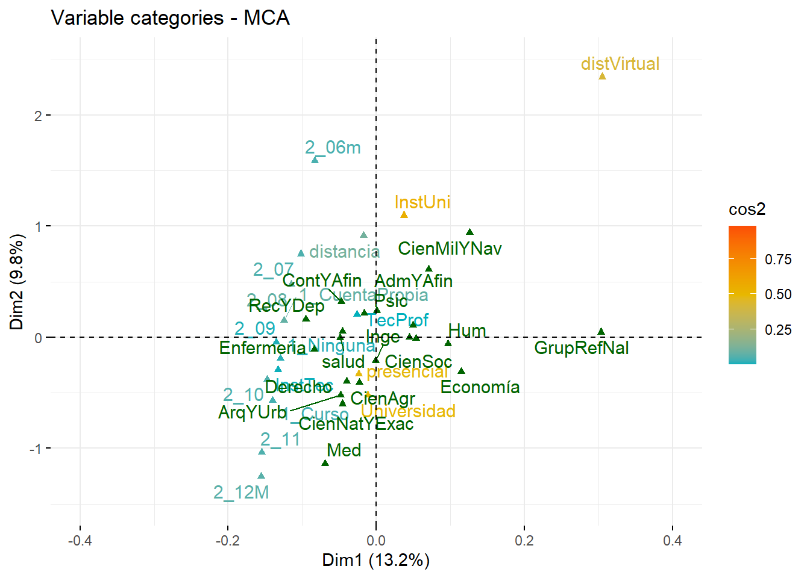
Se ve que las únicas dos categorías desconocido están muy lejos del centro respecto al primer eje como en el ACM anterior, y acotando se puede apreciar mejor de nuevo el cómo se agrupan las categorías, estando cerca categorías como estar en 12 Semestre o más y medicina, además de mostrar que los individuos que pertenecen a las categorías que están más abajo del gráfico son los que obtienen mejores puntajes respecto al promedio, reafirmando lo concluído en el ACP.
4.3 Variables relacionadas con la información socioeconómica
4.3.1 Dimensiones para el ACM
Se utiliza el Criterio de Benzécri para determinar con cuantos ejes realizar el ACM. Luego de aplicar dicho criterio, se obtiene la siguiente inercia para los ejes:

La inercia en cada eje luego de aplicar el criterio de Benzécri es
| Ejes | Inercia |
|---|---|
| Eje 1 | 90.5927 |
| Eje 2 | 8.9881 |
| Eje 3 | 0.4013 |
| Eje 4 | 0.0091 |
| Eje 5 | 0.0059 |
| Eje 6 | 0.0029 |
| Eje 7 | 0.0001 |
| Eje 8 | 0.0000 |
| Eje 9 | 0.0000 |
Entonces, se realiza el análisis con 2 ejes para el ACM.
4.3.2 Contribución de las variables al eje 1
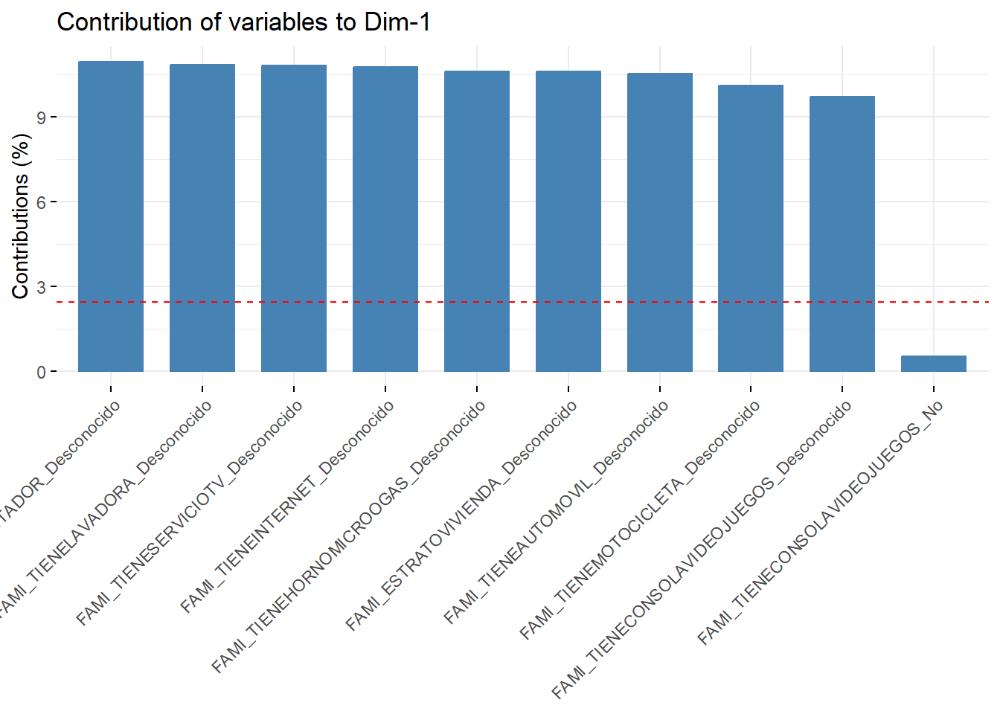
Las categorías que más aportan al primer eje son las de desconocido.
4.3.3 Contribución de las variables al eje 2

Las categorías que más aportan al segundo eje son si tiene o no algún bien o servicio.
4.3.4 Representación de las variables
Tal como en los puntos anteriores, si bien se muestra que las variables relacionadas con tener o no cierto bien están correlacionadas con el eje 1, y la variable Valor matrícula de la universidad se relaciona con el eje 2, esta representación no es muy fiable ya que la mayoría de las variables tienen la categoría ‘’Desconocido’’ con muy pocos individuos, lo que hace que estas categorías pesen demasiado y afecten la razón de correlaciones de cada variable. Se ve también que en el eje 1 las categpría que más contribuyen son las ‘’Desconocido’’.
4.3.5 Visualización del puntaje global

Las coordenadas son:
| Dim.1 | Dim.2 | |
|---|---|---|
| 1_m500 | 0.0218 | 0.7216 |
| 1_e500m1 | -0.0038 | 0.5066 |
| 1_e1m2.5 | -0.0253 | 0.1966 |
| 1_e2.5m4 | -0.0189 | -0.0004 |
| 1_e4m5.5 | 0.0097 | -0.2627 |
| 1_e5.5m7 | -0.0006 | -0.5582 |
| 1_M7 | 0.0109 | -1.0387 |
| 1_NP | 0.0360 | 0.6414 |
| 1_Desconocido | 0.0132 | -0.5180 |
Los valores test son:
| Dim.1 | Dim.2 | |
|---|---|---|
| 1_m500 | 2.6525 | 87.9647 |
| 1_e500m1 | -0.3590 | 47.5334 |
| 1_e1m2.5 | -4.8754 | 37.8749 |
| 1_e2.5m4 | -2.9467 | -0.0597 |
| 1_e4m5.5 | 1.2427 | -33.5539 |
| 1_e5.5m7 | -0.0527 | -52.7923 |
| 1_M7 | 1.5713 | -150.0752 |
| 1_NP | 4.4684 | 79.6076 |
| 1_Desconocido | 0.6215 | -24.4751 |
Las coordenadas son:
| Dim.1 | Dim.2 | |
|---|---|---|
| 2_Desconocido | 4.4702 | -0.0223 |
| 2_Estrato 1 | -0.1887 | 1.0781 |
| 2_Estrato 2 | -0.2039 | 0.2603 |
| 2_Estrato 3 | -0.2091 | -0.4492 |
| 2_Estrato 4 | -0.2119 | -1.1344 |
| 2_Estrato 5 | -0.2130 | -1.4752 |
| 2_Estrato 6 | -0.2102 | -1.6915 |
| 2_Sin Estrato | -0.1149 | 1.0630 |
Los valores test son:
| Dim.1 | Dim.2 | |
|---|---|---|
| 2_Desconocido | 339.915 | -1.699 |
| 2_Estrato 1 | -33.966 | 194.039 |
| 2_Estrato 2 | -50.921 | 65.003 |
| 2_Estrato 3 | -46.411 | -99.716 |
| 2_Estrato 4 | -23.696 | -126.829 |
| 2_Estrato 5 | -14.158 | -98.064 |
| 2_Estrato 6 | -10.359 | -83.374 |
| 2_Sin Estrato | -2.713 | 25.096 |
Las coordenadas son:
| Dim.1 | Dim.2 | |
|---|---|---|
| 3_Desconocido | 4.4346 | -0.0252 |
| 3_No | -0.1856 | 1.6124 |
| 3_Si | -0.2106 | -0.2115 |
Los valores test son:
| Dim.1 | Dim.2 | |
|---|---|---|
| 3_Desconocido | 342.46 | -1.946 |
| 3_No | -23.45 | 203.721 |
| 3_Si | -174.71 | -175.472 |
Las coordenadas son:
| Dim.1 | Dim.2 | |
|---|---|---|
| 4_Desconocido | 4.3045 | -0.0041 |
| 4_No | -0.2167 | 1.4336 |
| 4_Si | -0.2192 | -0.1974 |
Los valores test son:
| Dim.1 | Dim.2 | |
|---|---|---|
| 4_Desconocido | 346.41 | -0.3331 |
| 4_No | -27.92 | 184.6887 |
| 4_Si | -176.81 | -159.2320 |
Las coordenadas son:
| Dim.1 | Dim.2 | |
|---|---|---|
| 5_Desconocido | 4.2168 | -0.0045 |
| 5_No | -0.2163 | 1.2828 |
| 5_Si | -0.2224 | -0.2295 |
Los valores test son:
| Dim.1 | Dim.2 | |
|---|---|---|
| 5_Desconocido | 344.8 | -0.3712 |
| 5_No | -31.7 | 188.0005 |
| 5_Si | -161.6 | -166.7990 |
Las coordenadas son:
| Dim.1 | Dim.2 | |
|---|---|---|
| 6_Desconocido | 3.9689 | 0.0132 |
| 6_No | -0.2325 | 0.6761 |
| 6_Si | -0.2304 | -0.7479 |
Los valores test son:
| Dim.1 | Dim.2 | |
|---|---|---|
| 6_Desconocido | 342.07 | 1.14 |
| 6_No | -82.27 | 239.22 |
| 6_Si | -74.25 | -240.98 |
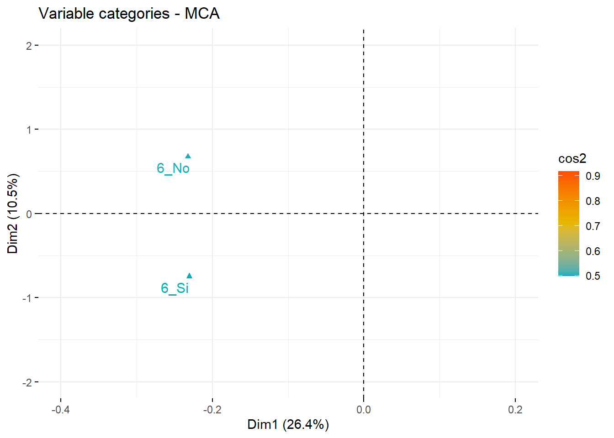
Las coordenadas son:
| Dim.1 | Dim.2 | |
|---|---|---|
| 7_Desconocido | 4.4081 | -0.0225 |
| 7_No | -0.2024 | 0.9481 |
| 7_Si | -0.2133 | -0.3459 |
Los valores test son:
| Dim.1 | Dim.2 | |
|---|---|---|
| 7_Desconocido | 343.66 | -1.756 |
| 7_No | -42.37 | 198.433 |
| 7_Si | -115.86 | -187.899 |
Las coordenadas son:
| Dim.1 | Dim.2 | |
|---|---|---|
| 8_Desconocido | 3.905 | 0.0175 |
| 8_No | -0.235 | 0.4932 |
| 8_Si | -0.231 | -0.9223 |
Los valores test son:
| Dim.1 | Dim.2 | |
|---|---|---|
| 8_Desconocido | 340.85 | 1.524 |
| 8_No | -105.80 | 222.007 |
| 8_Si | -57.77 | -230.686 |
Las coordenadas son:
| Dim.1 | Dim.2 | |
|---|---|---|
| 9_Desconocido | 3.7411 | -0.0221 |
| 9_No | -0.2385 | -0.0833 |
| 9_Si | -0.2284 | 0.1566 |
Los valores test son:
| Dim.1 | Dim.2 | |
|---|---|---|
| 9_Desconocido | 334.6 | -1.976 |
| 9_No | -106.1 | -37.090 |
| 9_Si | -57.5 | 39.421 |
Las coordenadas son:
| Dim.1 | Dim.2 | |
|---|---|---|
| 10_Desconocido | 3.5599 | 0.0032 |
| 10_No | -0.2387 | 0.2720 |
| 10_Si | -0.2373 | -1.1172 |
Los valores test son:
| Dim.1 | Dim.2 | |
|---|---|---|
| 10_Desconocido | 328.75 | 0.2919 |
| 10_No | -148.96 | 169.7381 |
| 10_Si | -40.16 | -189.0910 |
Individualmente se encontraron los mismos patrones que con el ACP, tomando en cuenta las coordenadas del puntaje global, las categorías se encuentran organizadas respecto a si representan un nivel socioeconómico alto o no, por lo que las categorías que representan un mejor nivel socioeconómico se encuentran en la misma dirección que el puntaje global.
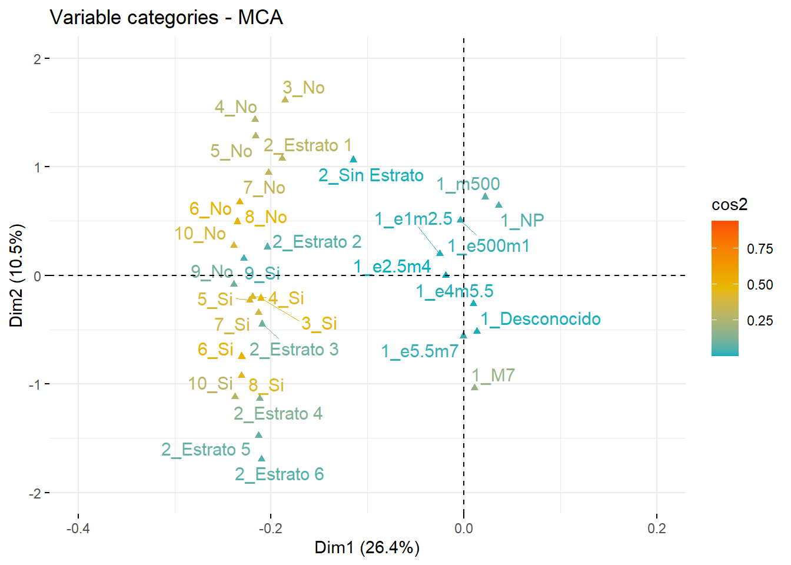
El plano factorial sin acotar muestra que las únicas categorías que realmente están muy bien representadas en el primer eje son las de desconocido. Acotando, vemos que realmente el segundo eje captura la información como si fuera un índice, reafirmando las conclusiones halladas en el ACP. Las categorías que representan un mayor nivel socioeconómico parecen tener mejores puntajes al promedio mientras que las categorías que representan un nivel socioeconómico más bajo parecen tener puntajes peores al promedio, exceptuando de nuevo, el poseer o no motocicleta, en cuyo caso pasa lo contrario.
5 Análisis de Correspondencias Múltiples sin considerar “Desconocido”
A continuación se muestra el Análisis de Correspondencias Múltiples (ACM) de los datos SaberPro 2022-2.
Se realiza un ACM para cada una de los distintos tipos de variables que cuenta la base de datos (Variables relacionadas con la información personal, Variables relacionadas con la información académica y Variables relacionadas con la información socioeconómica). En cada uno de los ACM se muestra la variable cuantitativa correspondiente al puntaje global como variable suplementaria.
5.1 Variables relacionadas con la información personal
5.1.1 Dimensiones para el ACM
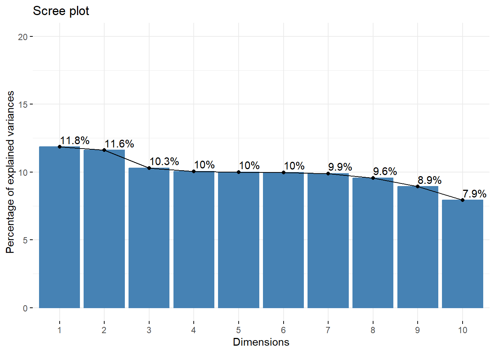
Como en el ACM existen ejes que se consideran “parásitos”, se utiliza el Criterio de Benzécri para determinar con cuantos ejes realizar el ACM. Luego de aplicar dicho criterio, se obtiene la siguiente inercia para los ejes:
La inercia en cada eje luego de aplicar el criterio de Benzécri es
| Ejes | Inercia |
|---|---|
| Eje 1 | 56.3185 |
| Eje 2 | 42.3613 |
| Eje 3 | 1.2994 |
| Eje 4 | 0.0208 |
Entonces, se realiza el análisis con 2 ejes para el ACM.
5.1.2 Contribución de las variables al eje 1

Podemos ver que las que más contribuyen al primer eje son las categorías “desconocido” de las distintas variables, veremos a qué nos lleva esto más adelante.
5.1.3 Contribución de las variables al eje 2
La mayor contribución en este eje también es dado por categorías “desconocido”, por lo que la variabilidad de estas categorías fue capturada en el primer y segundo eje, de ahí, ya empiezan a aparecer categorías distintas.
5.1.4 Representación de las variables
Si bien se muestra que variables relacionadas con la ocupación de la madre y padre están muy correlacionadas con el eje 1, y variables relacionadas con la educación de madre y padre con el eje 2; esta representación no es muy fiable ya que la mayoría de las variables tienen la categoría ‘’Desconocido’’ con muy pocos individuos, lo que hace que estas categorías pesen demasiado y afecten la razón de correlaciones de cada variable. Además, las variables de educación y ocupación de madre y padre tienen bastantes más categorías que las otras variables que se usaron para hacer este ACM.
5.1.5 Visualización del puntaje global
Nota
Para los siguientes ACMs, se graficaron los planos factoriales separando por variables y luego el plano factorial con todas las variables. En cada eje se acotó a un intervalo más pequeño para que se pueda apreciar de mejor manera la representación de las distintas variables, debido a que las categorías “desconocido” que hacen referencia a los valores faltantes en cada variable son las que más pesan, llevando a que tengan coordenadas que en proporción a las otras categorías son muy grandes, sin embargo, en el plano factorial con todas las variables se graficó tanto acotando como sin acotar, principalmente para apreciar esta diferencia. Además, para facilitar la visualización se recodificaron las variables con el fin de que las etiquetas de cada categoría sean más legibles. Se obviará la categoría desconocido en la mayoría de las variables ya que siempre estaba relacionada al primer eje y no parecía decir nada relevante.
Las coordenadas son:
| Dim.1 | Dim.2 | |
|---|---|---|
| F | -0.1923 | 0.2233 |
| M | 0.2716 | -0.3154 |
Los valores test son:
| Dim.1 | Dim.2 | |
|---|---|---|
| F | -81.56 | 94.7 |
| M | 81.56 | -94.7 |
Las coordenadas son:
| Dim.1 | Dim.2 | |
|---|---|---|
| No | -0.0839 | -0.1701 |
| Si | 0.9389 | 1.9040 |
Los valores test son:
| Dim.1 | Dim.2 | |
|---|---|---|
| No | -100.1 | -203.1 |
| Si | 100.1 | 203.1 |
Las coordenadas son:
| Dim.1 | Dim.2 | |
|---|---|---|
| BOGOTÁ | -0.1266 | -1.1779 |
| OTRO | 0.0434 | 0.4035 |
Los valores test son:
| Dim.1 | Dim.2 | Dim.3 | |
|---|---|---|---|
| BOGOTÁ | -26.44 | -246 | 38.23 |
| OTRO | 26.44 | 246 | -38.23 |
Las coordenadas son:
| Dim.1 | Dim.2 | |
|---|---|---|
| C | 1.8129 | 0.0298 |
| S | -0.3184 | -0.0360 |
| SyoV | 1.5987 | -0.4576 |
| UL | 1.6569 | 0.3781 |
Los valores test son:
| Dim.1 | Dim.2 | |
|---|---|---|
| C | 168.83 | 2.774 |
| S | -263.89 | -29.839 |
| SyoV | 50.68 | -14.505 |
| UL | 179.96 | 41.062 |
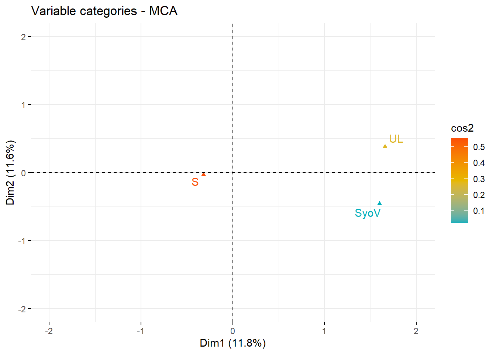
Las coordenadas son:
coordenas_sup <- res.mca$quali.sup$coord
coord_sup <- data.frame(coordenas_sup)
kable(coord_sup[14:26,1:2], digits = 4)| Dim.1 | Dim.2 | |
|---|---|---|
| data\(FAMI_EDUCACIONPADRE_BC | -0.0831| 0.0295| |data\)FAMI_EDUCACIONPADRE_BI | 0.1238 | -0.0065 |
| data\(FAMI_EDUCACIONPADRE_Desconocido | 0.6280| -0.4846| |data\)FAMI_EDUCACIONPADRE_EPC | -0.3294 | -0.0412 |
| data\(FAMI_EDUCACIONPADRE_EPI | -0.0938| -0.1138| |data\)FAMI_EDUCACIONPADRE_NAp | -0.0574 | -0.0049 |
| data\(FAMI_EDUCACIONPADRE_Ninguno | 0.5291| 0.2800| |data\)FAMI_EDUCACIONPADRE_NS | -0.0865 | -0.1146 |
| data\(FAMI_EDUCACIONPADRE_PC | 0.2491| 0.1075| |data\)FAMI_EDUCACIONPADRE_PI | 0.2786 | 0.1457 |
| data\(FAMI_EDUCACIONPADRE_Post | -0.4255| -0.2051| |data\)FAMI_EDUCACIONPADRE_TTC | -0.1636 | 0.0216 |
| data$FAMI_EDUCACIONPADRE_TTI | -0.0225 | -0.0028 |
Los valores test son:
| Dim.1 | Dim.2 | |
|---|---|---|
| data\(FAMI_EDUCACIONPADRE_BC | -14.445| 5.1174| |data\)FAMI_EDUCACIONPADRE_BI | 13.729 | -0.7219 |
| data\(FAMI_EDUCACIONPADRE_Desconocido | 44.272| -34.1594| |data\)FAMI_EDUCACIONPADRE_EPC | -45.287 | -5.6674 |
| data\(FAMI_EDUCACIONPADRE_EPI | -7.257| -8.8026| |data\)FAMI_EDUCACIONPADRE_NAp | -2.166 | -0.1841 |
| data\(FAMI_EDUCACIONPADRE_Ninguno | 28.407| 15.0330| |data\)FAMI_EDUCACIONPADRE_NS | -5.155 | -6.8285 |
| data\(FAMI_EDUCACIONPADRE_PC | 25.347| 10.9385| |data\)FAMI_EDUCACIONPADRE_PI | 45.511 | 23.7928 |
| data\(FAMI_EDUCACIONPADRE_Post | -42.392| -20.4382| |data\)FAMI_EDUCACIONPADRE_TTC | -19.274 | 2.5460 |
| data$FAMI_EDUCACIONPADRE_TTI | -1.395 | -0.1715 |
Las coordenadas son:
| Dim.1 | Dim.2 | |
|---|---|---|
| data\(FAMI_EDUCACIONMADRE_BC | -0.0137| 0.0077| |data\)FAMI_EDUCACIONMADRE_BI | 0.1744 | 0.0152 |
| data\(FAMI_EDUCACIONMADRE_Desconocido | 0.6396| -0.5022| |data\)FAMI_EDUCACIONMADRE_EPC | -0.3692 | -0.0531 |
| data\(FAMI_EDUCACIONMADRE_EPI | -0.2304| -0.1200| |data\)FAMI_EDUCACIONMADRE_NAp | 0.0390 | 0.1921 |
| data\(FAMI_EDUCACIONMADRE_Ninguno | 0.6625| 0.3889| |data\)FAMI_EDUCACIONMADRE_NS | -0.0162 | -0.0369 |
| data\(FAMI_EDUCACIONMADRE_PC | 0.3325| 0.0942| |data\)FAMI_EDUCACIONMADRE_PI | 0.3866 | 0.1586 |
| data\(FAMI_EDUCACIONMADRE_Post | -0.4302| -0.1689| |data\)FAMI_EDUCACIONMADRE_TTC | -0.1828 | 0.0541 |
| data$FAMI_EDUCACIONMADRE_TTI | -0.0529 | 0.0023 |
Los valores test son:
| Dim.1 | Dim.2 | |
|---|---|---|
| data\(FAMI_EDUCACIONMADRE_BC | -2.4932| 1.4009| |data\)FAMI_EDUCACIONMADRE_BI | 20.6444 | 1.8047 |
| data\(FAMI_EDUCACIONMADRE_Desconocido | 45.5889| -35.8005| |data\)FAMI_EDUCACIONMADRE_EPC | -53.7278 | -7.7319 |
| data\(FAMI_EDUCACIONMADRE_EPI | -14.4580| -7.5333| |data\)FAMI_EDUCACIONMADRE_NAp | 0.6027 | 2.9667 |
| data\(FAMI_EDUCACIONMADRE_Ninguno | 28.6340| 16.8081| |data\)FAMI_EDUCACIONMADRE_NS | -0.3760 | -0.8568 |
| data\(FAMI_EDUCACIONMADRE_PC | 33.1871| 9.4079| |data\)FAMI_EDUCACIONMADRE_PI | 53.1003 | 21.7837 |
| data\(FAMI_EDUCACIONMADRE_Post | -45.5196| -17.8770| |data\)FAMI_EDUCACIONMADRE_TTC | -26.7396 | 7.9173 |
| data$FAMI_EDUCACIONMADRE_TTI | -3.7235 | 0.1630 |
Las coordenadas son:
| Dim.1 | Dim.2 | |
|---|---|---|
| data\(FAMI_OCUPACIONPADRE_Desconocido | -0.1055| -0.1550| |data\)FAMI_OCUPACIONPADRE_EDGG | -0.4248 | -0.2980 |
| data\(FAMI_OCUPACIONPADRE_Emp | -0.2200| -0.2577| |data\)FAMI_OCUPACIONPADRE_ENAA | -0.1836 | -0.1054 |
| data\(FAMI_OCUPACIONPADRE_END | -0.3474| -0.1807| |data\)FAMI_OCUPACIONPADRE_ENTP | -0.3081 | -0.0202 |
| data\(FAMI_OCUPACIONPADRE_EOO | 0.0674| -0.0123| |data\)FAMI_OCUPACIONPADRE_H | 0.3491 | 0.0730 |
| data\(FAMI_OCUPACIONPADRE_OAO | 0.1072| 0.0727| |data\)FAMI_OCUPACIONPADRE_PE | -0.0589 | -0.1584 |
| data\(FAMI_OCUPACIONPADRE_Pen | 0.1668| -0.1224| |data\)FAMI_OCUPACIONPADRE_PI | -0.3289 | -0.1713 |
| data$FAMI_OCUPACIONPADRE_TCP | 0.0791 | 0.1244 |
Los valores test son:
| Dim.1 | Dim.2 | |
|---|---|---|
| data\(FAMI_OCUPACIONPADRE_Desconocido | -4.829| -7.095| |data\)FAMI_OCUPACIONPADRE_EDGG | -22.348 | -15.680 |
| data\(FAMI_OCUPACIONPADRE_Emp | -13.951| -16.342| |data\)FAMI_OCUPACIONPADRE_ENAA | -9.324 | -5.356 |
| data\(FAMI_OCUPACIONPADRE_END | -14.540| -7.564| |data\)FAMI_OCUPACIONPADRE_ENTP | -37.494 | -2.458 |
| data\(FAMI_OCUPACIONPADRE_EOO | 9.282| -1.700| |data\)FAMI_OCUPACIONPADRE_H | 19.590 | 4.096 |
| data\(FAMI_OCUPACIONPADRE_OAO | 16.009| 10.857| |data\)FAMI_OCUPACIONPADRE_PE | -4.293 | -11.537 |
| data\(FAMI_OCUPACIONPADRE_Pen | 19.922| -14.613| |data\)FAMI_OCUPACIONPADRE_PI | -24.766 | -12.898 |
| data$FAMI_OCUPACIONPADRE_TCP | 18.838 | 29.640 |
Las coordenadas son:
| Dim.1 | Dim.2 | |
|---|---|---|
| data\(FAMI_OCUPACIONMADRE_Desconocido | -0.1055| -0.1550| |data\)FAMI_OCUPACIONMADRE_EDGG | -0.4217 | -0.3406 |
| data\(FAMI_OCUPACIONMADRE_Emp | -0.2356| -0.2266| |data\)FAMI_OCUPACIONMADRE_ENAA | -0.2217 | -0.0829 |
| data\(FAMI_OCUPACIONMADRE_END | -0.3188| -0.2066| |data\)FAMI_OCUPACIONMADRE_ENTP | -0.3190 | -0.0286 |
| data\(FAMI_OCUPACIONMADRE_EOO | 0.0610| -0.2256| |data\)FAMI_OCUPACIONMADRE_H | 0.1496 | 0.1074 |
| data\(FAMI_OCUPACIONMADRE_OAO | 0.0295| 0.0965| |data\)FAMI_OCUPACIONMADRE_PE | -0.0779 | -0.1110 |
| data\(FAMI_OCUPACIONMADRE_Pen | 0.2119| -0.2155| |data\)FAMI_OCUPACIONMADRE_PI | -0.3499 | -0.1703 |
| data$FAMI_OCUPACIONMADRE_TCP | 0.0348 | 0.0307 |
Los valores test son:
| Dim.1 | Dim.2 | |
|---|---|---|
| data\(FAMI_OCUPACIONMADRE_Desconocido | -4.829| -7.095| |data\)FAMI_OCUPACIONMADRE_EDGG | -17.427 | -14.076 |
| data\(FAMI_OCUPACIONMADRE_Emp | -10.091| -9.706| |data\)FAMI_OCUPACIONMADRE_ENAA | -19.453 | -7.269 |
| data\(FAMI_OCUPACIONMADRE_END | -15.243| -9.878| |data\)FAMI_OCUPACIONMADRE_ENTP | -39.876 | -3.579 |
| data\(FAMI_OCUPACIONMADRE_EOO | 4.872| -18.026| |data\)FAMI_OCUPACIONMADRE_H | 43.575 | 31.277 |
| data\(FAMI_OCUPACIONMADRE_OAO | 3.068| 10.031| |data\)FAMI_OCUPACIONMADRE_PE | -5.399 | -7.691 |
| data\(FAMI_OCUPACIONMADRE_Pen | 17.593| -17.889| |data\)FAMI_OCUPACIONMADRE_PI | -25.027 | -12.179 |
| data$FAMI_OCUPACIONMADRE_TCP | 4.599 | 4.049 |
Las coordenadas son:
| Dim.1 | Dim.2 | |
|---|---|---|
| 0 | -1.3459 | 0.0376 |
| Entre 11 y 20 horas | -0.1447 | 0.4504 |
| Entre 21 y 30 horas | -0.1498 | 0.2135 |
| Más de 30 horas | 0.7056 | -0.5710 |
| Menos de 10 horas | -0.2017 | 0.8471 |
Los valores test son:
| Dim.1 | Dim.2 | |
|---|---|---|
| 0 | -208.37 | 5.825 |
| Entre 11 y 20 horas | -23.22 | 72.305 |
| Entre 21 y 30 horas | -20.13 | 28.686 |
| Más de 30 horas | 207.48 | -167.899 |
| Menos de 10 horas | -29.61 | 124.368 |
Teniendo en cuenta las coordenadas del puntaje global, encontrándose en el cuarto cuadrante de los planos plano, las conclusiones a las que se llegan son muy parecidas a las que se obtuvieron en el ACP. Los estudiantes con características como hombre, sin etnia, que viven en Bogotá, con estado civil soltero, con padres y madres con niveles de educación superior, mejores puestos laborales y menos horas de trabajo, tienen en promedio mejores puntajes que el resto. El primer eje no parece aportar información relevante, el segundo parece reafirmar las conclusiones halladas en el ACP y el tercer eje también parece reafirmar estas conclusiones.
Warning: ggrepel: 48 unlabeled data points (too many overlaps). Consider
increasing max.overlapsVemos que sin acotar en el primer y segundo eje, la mayoría de las categorías están muy cerca al centro, mientras que las categorías desconocido se encuentran por lo general muy alejadas de el centro, lo cual era esperable pues estos individuos son los que tenían valores faltantes, que por lo general eran una pequeña cantidad, por lo que su variabilidad es muy grande.
Acotando en los ejes, podemos ver que las características relacionadas a un mejor nivel socioeconómico y a menos responsabilidades, como padres y madres en mejores cargos, padres y madres con mejores niveles educativos, estar soltero, no trabajar, se encuentran concentradas en el cuarto cuadrante del plano, en donde también se encuentran las coordenadas del puntaje global.
En resumen, vemos que los datos parecen llevarnos a la misma conclusión que en el caso del ACP.
5.2 Variables relacionadas con la información académica
5.2.1 Dimensiones para el ACM
Se utiliza el Criterio de Benzecri para determinar con cuantos ejes realizar el ACM. Luego de aplicar dicho criterio, se obtiene la siguiente inercia para los ejes:
La inercia en cada eje luego de aplicar el criterio de Benzécri es
| Ejes | Inercia |
|---|---|
| Eje 1 | 88.8663 |
| Eje 2 | 6.1176 |
| Eje 3 | 3.5136 |
| Eje 4 | 1.1935 |
| Eje 5 | 0.3086 |
| Eje 6 | 0.0005 |
Entonces, se realiza el análisis con 2 ejes para el ACM.
5.2.2 Contribución de las variables al eje 1
De nuevo las categorías que más contribuyen al primer eje son las de desconocido.
5.2.3 Contribución de las variables al eje 2
Las contribuciones al segundo eje se ven principalmente en la modalidad de estudio y el tipo de institución a la que el estudiante pertenece, y no se ve un aporte de las categorías desconocido.
5.2.4 Representación de las variables
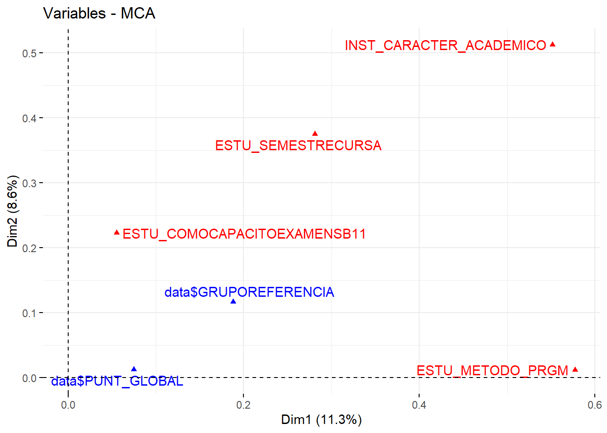
Nuevamente, si bien se muestra que la variable Cómo capacitó el exámen está muy correlacionada con el eje 1, y las variables Método del programa y el Carácter acdémico de la institución se relacionan con el eje 2, esta representación no es muy fiable ya que la mayoría de las variables tienen la categoría ‘’Desconocido’’ con muy pocos individuos, lo que hace que estas categorías pesen demasiado y afecten la razón de correlaciones de cada variable.
5.2.5 Visualización del puntaje global
Las coordenadas son:
| Dim.1 | Dim.2 | |
|---|---|---|
| CuentaPropia | 0.1441 | -0.2854 |
| Curso | -0.5810 | 1.1924 |
| Ninguna | -0.2017 | 0.3810 |
Los valores test son:
| Dim.1 | Dim.2 | |
|---|---|---|
| CuentaPropia | 76.26 | -150.98 |
| Curso | -67.13 | 137.78 |
| Ninguna | -37.98 | 71.74 |
Las coordenadas son:
| Dim.1 | Dim.2 | |
|---|---|---|
| 06m | 1.5699 | 0.0437 |
| 07 | 0.7322 | 0.5901 |
| 08 | 0.4573 | 0.5157 |
| 09 | -0.0243 | -0.3775 |
| 10 | -0.3963 | -0.6302 |
| 11 | -1.0527 | 1.0122 |
| 12M | -1.2686 | 1.5855 |
Los valores test son:
| Dim.1 | Dim.2 | |
|---|---|---|
| 06m | 73.796 | 2.054 |
| 07 | 74.856 | 60.329 |
| 08 | 93.608 | 105.562 |
| 09 | -6.258 | -97.297 |
| 10 | -78.401 | -124.691 |
| 11 | -79.829 | 76.756 |
| 12M | -90.312 | 112.873 |
Se dejó como variable suplementaria ya que tiene 22 categorías
Las coordenadas son:
| Dim.1 | Dim.2 | |
|---|---|---|
| AdmYAfin | 0.6173 | -0.1282 |
| ArqYUrb | -0.5210 | -0.1761 |
| BelArtYDis | -0.0004 | 0.0078 |
| CienAgr | -0.4076 | 0.0289 |
| CienMilYNav | 0.9368 | 0.4387 |
| CienNatYExac | -0.6014 | 0.1582 |
| CienSoc | -0.0103 | 0.2448 |
| ComuPerYPub | 0.1078 | 0.0787 |
| ContYAfin | 0.3140 | -0.1830 |
| Derecho | -0.3961 | -0.2818 |
| EcAdContYAfinU | -0.8036 | -0.1792 |
| Economía | -0.3010 | 0.1383 |
| Educación | 0.0538 | 0.1437 |
| Enfermeria | -0.1207 | 0.5174 |
| GrupRefNal | 0.0507 | -1.5956 |
| GrupRefNalU | 0.2085 | -0.8060 |
| Hum | -0.0563 | 0.3454 |
| Inge | -0.2120 | -0.1759 |
| Med | -1.1473 | 1.1442 |
| Psic | 0.2373 | 0.0601 |
| RecYDep | 0.1562 | -0.1438 |
| salud | -0.0082 | 0.3313 |
| Dim.1 | Dim.2 | |
|---|---|---|
| AdmYAfin | 103.3514 | -21.4714 |
| ArqYUrb | -38.7677 | -13.1073 |
| BelArtYDis | -0.0216 | 0.4681 |
| CienAgr | -21.1117 | 1.4967 |
| CienMilYNav | 26.3458 | 12.3364 |
| CienNatYExac | -29.1785 | 7.6740 |
| CienSoc | -0.6890 | 16.4231 |
| ComuPerYPub | 6.5245 | 4.7626 |
| ContYAfin | 29.3337 | -17.0982 |
| Derecho | -37.7658 | -26.8660 |
| EcAdContYAfinU | -8.5078 | -1.8973 |
| Economía | -12.6812 | 5.8288 |
| Educación | 5.2366 | 13.9845 |
| Enfermeria | -6.8734 | 29.4692 |
| GrupRefNal | 0.2026 | -6.3827 |
| GrupRefNalU | 13.0887 | -50.5929 |
| Hum | -1.7002 | 10.4402 |
| Inge | -36.3002 | -30.1110 |
| Med | -88.8734 | 88.6370 |
| Psic | 23.2395 | 5.8830 |
| RecYDep | 4.2445 | -3.9084 |
| salud | -0.7339 | 29.5406 |
Las coordenadas son:
| Dim.1 | Dim.2 | |
|---|---|---|
| distancia | 0.9108 | 0.2684 |
| distVirtual | 2.3605 | 0.1413 |
| presencial | -0.3323 | -0.0501 |
Los valores test son:
| Dim.1 | Dim.2 | |
|---|---|---|
| distancia | 117.1 | 34.51 |
| distVirtual | 231.7 | 13.87 |
| presencial | -248.7 | -37.45 |
Las coordenadas son:
| Dim.1 | Dim.2 | |
|---|---|---|
| InstTec | -0.3083 | -2.3382 |
| InstUni | 1.0956 | 0.1723 |
| TecProf | 0.2167 | -4.2538 |
| Universidad | -0.5225 | 0.1438 |
Los valores test son:
| Dim.1 | Dim.2 | |
|---|---|---|
| InstTec | -19.03 | -144.32 |
| InstUni | 262.47 | 41.29 |
| TecProf | 10.56 | -207.37 |
| Universidad | -249.64 | 68.71 |
De la misma manera que con el ACP, ya que, obviando el primer eje que parece tomar toda la inercia de las categorías desconocido, el segundo eje parece indicar que las personas con características como estudiar de manera presencial, en una universidad y cursando los últimos semestres obtienen mejores puntajes que el promedio, pues el puntaje global en ese eje apunta a la misma dirección. Además de esto, aunque se uso como variable suplementaria el grupo de referencia, se puede apreciar que también parece seguir las conclusiones del ACP, personas que hacen parte a grupos de referencia como Medicina, Econ.,admin.,contad. y afines Univer, obtienen mejores puntajes que el promedio.

Se ve que las únicas dos categorías desconocido están muy lejos del centro respecto al primer eje como en el ACM anterior, y acotando se puede apreciar mejor de nuevo el cómo se agrupan las categorías, estando cerca categorías como estar en 12 Semestre o más y medicina, además de mostrar que los individuos que pertenecen a las categorías que están más abajo del gráfico son los que obtienen mejores puntajes respecto al promedio, reafirmando lo concluído en el ACP.
5.3 Variables relacionadas con la información socioeconómica
5.3.1 Dimensiones para el ACM
Se utiliza el Criterio de Benzécri para determinar con cuantos ejes realizar el ACM. Luego de aplicar dicho criterio, se obtiene la siguiente inercia para los ejes:
La inercia en cada eje luego de aplicar el criterio de Benzécri es
| Ejes | Inercia |
|---|---|
| Eje 1 | 91.8377 |
| Eje 2 | 6.5720 |
| Eje 3 | 1.5167 |
| Eje 4 | 0.0625 |
| Eje 5 | 0.0101 |
| Eje 6 | 0.0006 |
| Eje 7 | 0.0003 |
| Eje 8 | 0.0001 |
Entonces, se realiza el análisis con 2 ejes para el ACM.
5.3.2 Contribución de las variables al eje 1
Las categorías que más aportan al primer eje son las de desconocido.
5.3.3 Contribución de las variables al eje 2
Las categorías que más aportan al segundo eje son si tiene o no algún bien o servicio.
5.3.4 Representación de las variables
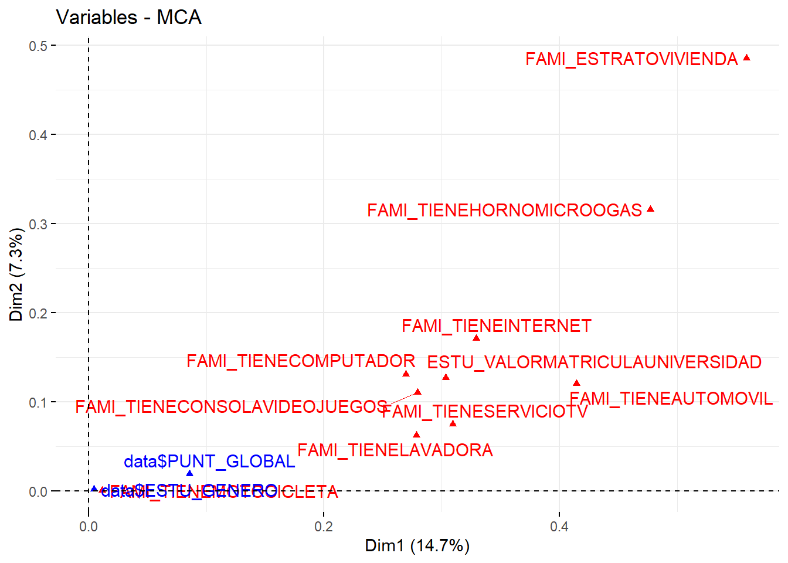
Tal como en los puntos anteriores, si bien se muestra que las variables relacionadas con tener o no cierto bien están correlacionadas con el eje 1, y la variable Valor matrícula de la universidad se relaciona con el eje 2, esta representación no es muy fiable ya que la mayoría de las variables tienen la categoría ‘’Desconocido’’ con muy pocos individuos, lo que hace que estas categorías pesen demasiado y afecten la razón de correlaciones de cada variable. Se ve también que en el eje 1 las categpría que más contribuyen son las ‘’Desconocido’’.
5.3.5 Visualización del puntaje global
Las coordenadas son:
| Dim.1 | Dim.2 | |
|---|---|---|
| e1m2.5 | 0.1452 | -0.2339 |
| e2.5m4 | -0.0016 | -0.2302 |
| e4m5.5 | -0.2643 | -0.1884 |
| e5.5m7 | -0.5615 | -0.0533 |
| e500m1 | 0.5093 | -0.0418 |
| m500 | 0.7261 | 0.0276 |
| M7 | -1.0412 | 0.8446 |
| NP | 0.6458 | -0.0056 |
Los valores test son:
| Dim.1 | Dim.2 | |
|---|---|---|
| e1m2.5 | 29.3570 | -47.2878 |
| e2.5m4 | -0.2457 | -35.8405 |
| e4m5.5 | -33.7620 | -24.0597 |
| e5.5m7 | -53.1033 | -5.0449 |
| e500m1 | 47.7863 | -3.9254 |
| m500 | 88.5073 | 3.3617 |
| M7 | -150.4342 | 122.0360 |
| NP | 80.1457 | -0.6938 |
Las coordenadas son:
| Dim.1 | Dim.2 | |
|---|---|---|
| Estrato 1 | 1.0884 | 0.6679 |
| Estrato 2 | 0.2185 | -0.7429 |
| Estrato 3 | -0.4484 | -0.0516 |
| Estrato 4 | -1.1308 | 0.7681 |
| Estrato 5 | -1.4685 | 1.3561 |
| Estrato 6 | -1.6780 | 1.8695 |
| Sin Estrato | 1.0987 | 1.4550 |
Los valores test son:
| Dim.1 | Dim.2 | |
|---|---|---|
| Estrato 1 | 195.89 | 120.21 |
| Estrato 2 | 60.05 | -204.14 |
| Estrato 3 | -99.54 | -11.45 |
| Estrato 4 | -126.43 | 85.87 |
| Estrato 5 | -97.62 | 90.15 |
| Estrato 6 | -82.71 | 92.15 |
| Sin Estrato | 25.94 | 34.35 |
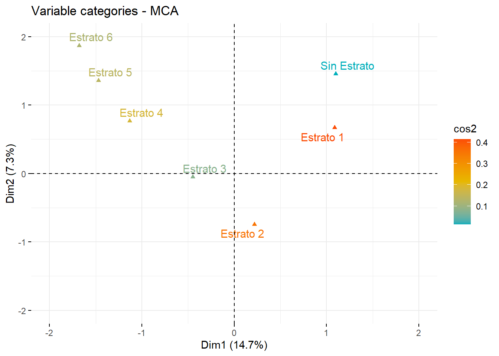
Las coordenadas son:
| Dim.1 | Dim.2 | |
|---|---|---|
| FAMI_TIENEINTERNET_No | 1.6210 | 1.1680 |
| FAMI_TIENEINTERNET_Si | -0.2032 | -0.1464 |
Los valores test son:
| Dim.1 | Dim.2 | |
|---|---|---|
| FAMI_TIENEINTERNET_No | 204.8 | 147.6 |
| FAMI_TIENEINTERNET_Si | -204.8 | -147.6 |
Las coordenadas son:
| Dim.1 | Dim.2 | |
|---|---|---|
| FAMI_TIENECOMPUTADOR_No | 1.4386 | 1.0015 |
| FAMI_TIENECOMPUTADOR_Si | -0.1875 | -0.1305 |
Los valores test son:
| Dim.1 | Dim.2 | |
|---|---|---|
| FAMI_TIENECOMPUTADOR_No | 185.3 | 129 |
| FAMI_TIENECOMPUTADOR_Si | -185.3 | -129 |
Las coordenadas son:
| Dim.1 | Dim.2 | |
|---|---|---|
| FAMI_TIENELAVADORA_No | 1.2847 | 0.6070 |
| FAMI_TIENELAVADORA_Si | -0.2167 | -0.1024 |
Los valores test son:
| Dim.1 | Dim.2 | |
|---|---|---|
| FAMI_TIENELAVADORA_No | 188.3 | 88.95 |
| FAMI_TIENELAVADORA_Si | -188.3 | -88.95 |
Las coordenadas son:
| Dim.1 | Dim.2 | |
|---|---|---|
| FAMI_TIENEHORNOMICROOGAS_Desconocido | 0.0426 | -2.2780 |
| FAMI_TIENEHORNOMICROOGAS_No | 0.6739 | 0.0209 |
Los valores test son:
| Dim.1 | Dim.2 | |
|---|---|---|
| FAMI_TIENEHORNOMICROOGAS_Desconocido | 3.676 | -196.339 |
| FAMI_TIENEHORNOMICROOGAS_No | 238.456 | 7.385 |
Las coordenadas son:
| Dim.1 | Dim.2 | |
|---|---|---|
| FAMI_TIENEHORNOMICROOGAS_Si | -0.7491 | 0.2565 |
| FAMI_TIENESERVICIOTV_No | 0.9485 | 0.4654 |
Los valores test son:
| Dim.1 | Dim.2 | |
|---|---|---|
| FAMI_TIENEHORNOMICROOGAS_Si | -241.4 | 82.66 |
| FAMI_TIENESERVICIOTV_No | 198.5 | 97.41 |
Las coordenadas son:
| Dim.1 | Dim.2 | |
|---|---|---|
| FAMI_TIENESERVICIOTV_Si | -0.3263 | -0.1601 |
| FAMI_TIENEAUTOMOVIL_No | 0.4512 | -0.2428 |
Los valores test son:
| Dim.1 | Dim.2 | |
|---|---|---|
| FAMI_TIENESERVICIOTV_Si | -198.5 | -97.41 |
| FAMI_TIENEAUTOMOVIL_No | 229.7 | -123.62 |
Las coordenadas son:
| Dim.1 | Dim.2 | |
|---|---|---|
| FAMI_TIENEAUTOMOVIL_Si | -0.9183 | 0.4942 |
| FAMI_TIENEMOTOCICLETA_No | -0.0759 | -0.0106 |
Los valores test son:
| Dim.1 | Dim.2 | |
|---|---|---|
| FAMI_TIENEAUTOMOVIL_Si | -229.7 | 123.623 |
| FAMI_TIENEMOTOCICLETA_No | -38.4 | -5.388 |
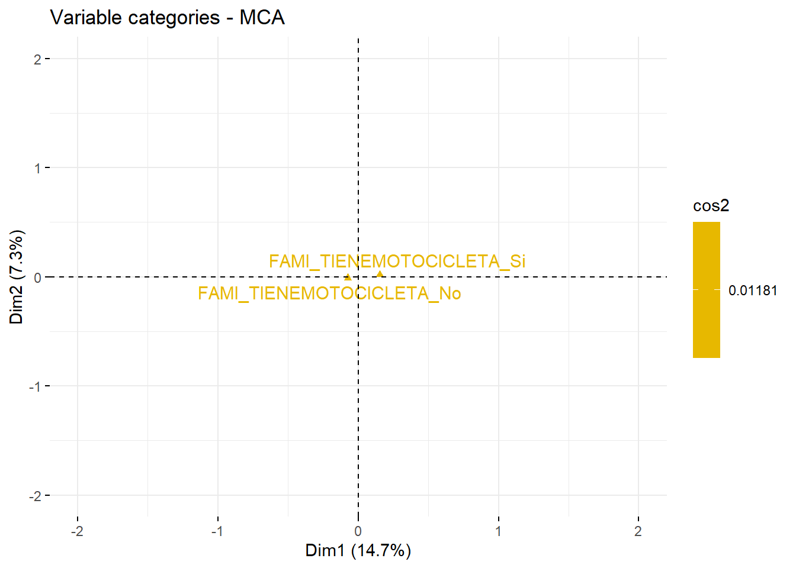
Las coordenadas son:
| Dim.1 | Dim.2 | |
|---|---|---|
| FAMI_TIENEMOTOCICLETA_Si | 0.1526 | 0.0214 |
| FAMI_TIENECONSOLAVIDEOJUEGOS_No | 0.2508 | -0.1575 |
Los valores test son:
| Dim.1 | Dim.2 | |
|---|---|---|
| FAMI_TIENEMOTOCICLETA_Si | 38.4 | 5.388 |
| FAMI_TIENECONSOLAVIDEOJUEGOS_No | 188.7 | -118.475 |
Individualmente se encontraron los mismos patrones que con el ACP, tomando en cuenta las coordenadas del puntaje global, las categorías se encuentran organizadas respecto a si representan un nivel socioeconómico alto o no, por lo que las categorías que representan un mejor nivel socioeconómico se encuentran en la misma dirección que el puntaje global.
El plano factorial sin acotar muestra que las únicas categorías que realmente están muy bien representadas en el primer eje son las de desconocido. Acotando, vemos que realmente el segundo eje captura la información como si fuera un índice, reafirmando las conclusiones halladas en el ACP. Las categorías que representan un mayor nivel socioeconómico parecen tener mejores puntajes al promedio mientras que las categorías que representan un nivel socioeconómico más bajo parecen tener puntajes peores al promedio, exceptuando de nuevo, el poseer o no motocicleta, en cuyo caso pasa lo contrario.